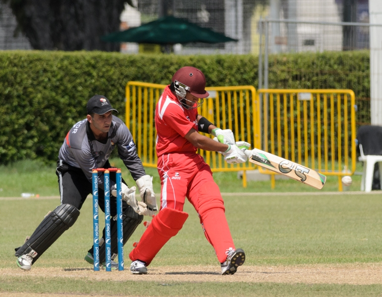
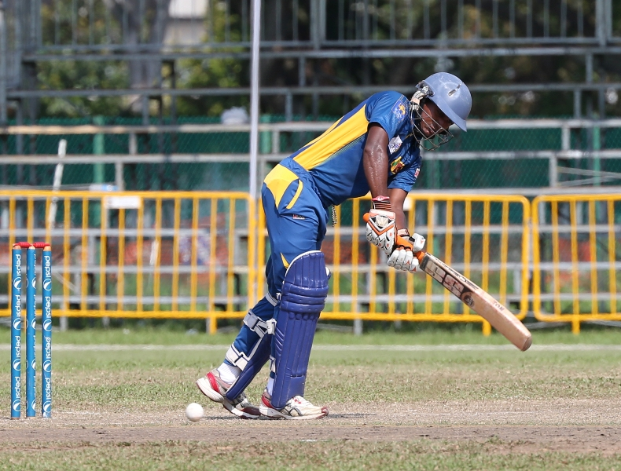
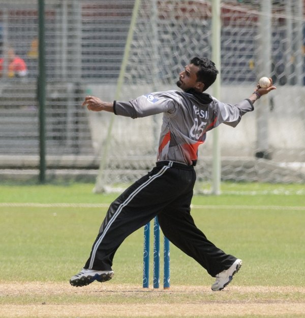
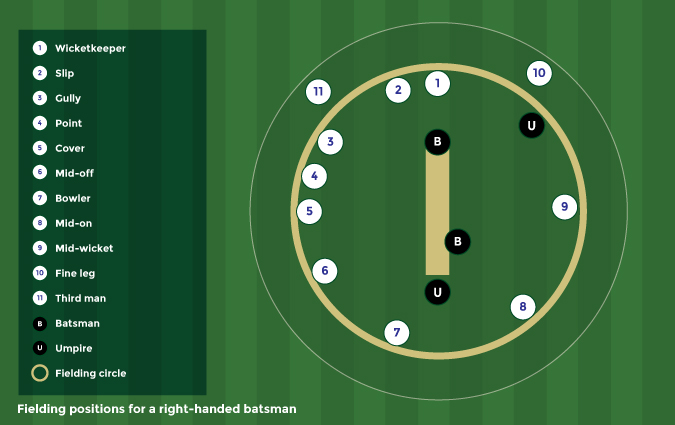
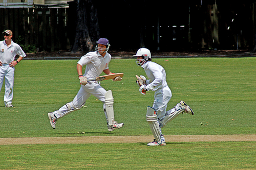
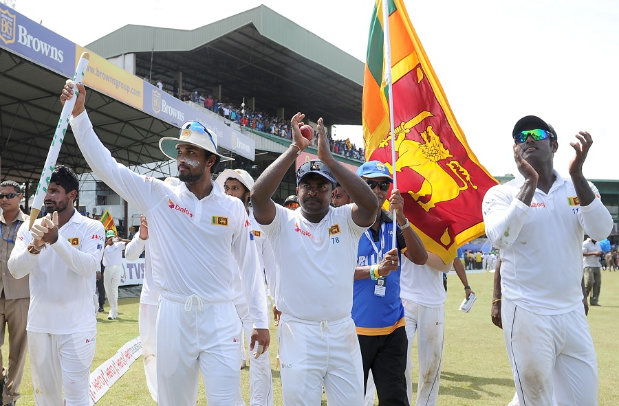

History

There is a consensus of expert opinion that cricket may have been invented during Saxon or Norman times by children living in the
Weald, an area of dense woodlands and clearings in south-east England. The first reference to cricket being played as an adult sport
was in 1611, and in the same year, a dictionary defined cricket as a boys' game. There is also the thought that cricket may have
derived from bowls, by the intervention of a batsman trying to stop the ball from reaching its target by hitting it away.Village
cricket had developed by the middle of the 17th century and the first English “county teams” were formed in the second half of the
century, as “local experts” from village cricket were employed as the earliest professionals. The first known game in which the
teams use county names is in 1709
In the first half of the 18th Century cricket established itself as a leading sport in London and the south-eastern counties of
England. Its spread was limited by the constraints of travel, but it was slowly gaining popularity in other parts of England and
Women’s Cricket dates back to the 1745, when the first known match was played in Surrey.In 1744, the first Laws of Cricket were
written and subsequently amended in 1774, when innovations such as lbw, a 3rd stump, - the middle stump and a maximum bat width
were added. The codes were drawn up by the “Star and Garter Club” whose members ultimately founded the famous Marylebone Cricket
Club at Lord's in 1787. MCC immediately became the custodian of the Laws and has made revisions ever since then to the current day.

Rolling the ball along the ground was superseded sometime after 1760 when bowlers began to pitch the ball and in response to that
innovation the straight bat replaced the old “hockey-stick” style of bat. The Hambledon Club in Hampshire was the focal point of
the game for about thirty years until the formation of MCC and the opening of Lord's Cricket Ground in 1787.Cricket was introduced
to North America via the English colonies as early as the 17th century, and in the 18th century it arrived in other parts of the
globe. It was introduced to the West Indies by colonists and to India by British East India Company mariners. It arrived in
Australia almost as soon as colonisation began in 1788 and the sport reached New Zealand and South Africa in the early years of
the 19th century.
Origin of Cricket
The game is believed to have started in South East England during the time of Saxons and/or Normans. In fact, it was a game played
by children in the countryside. Little boys bowled into either a tree stump or a sheep pen gate. The crossbar on the gate was the
bail, and the gate the wicket.When bowled into, the bail would get dislodged. This made it more preferable than a tree stump and
possibly explains the design of the modern day wicket. A shaped tree branch was used to hit the oncoming ball before it hits the
wicket.It's only during the 1700s that cricket started becoming more of an adult sport. Bowling techniques weren't as advanced
during these times and batting dominated the sport. This lead to early advancements in the design of bats.
Fun Fact: The existence of cricket was formally documented for the first time in a 1598 court case over a land dispute - the case
files mention a John Derrick having testified to playing creckett in the said land half a century before the case. This proves the
definite existence of cricket in the 1500s. With the British empire's expansion, soldiers and settlers brought the game with them
to the various colonies under their control. And thus began the story of cricket.
Cricket becomes an international sport
In 1844, the first-ever international match took place between what were essentially club teams, from the United States and Canada,
in Toronto; Canada won. In 1859, a team of English players went to North America on the first overseas tour.Meanwhile,
the British Empire had been instrumental in spreading the game overseas and by the middle of the 19th century it had become well
established in Australia, the Caribbean, British India (which includes present-day Pakistan and Bangladesh), New Zealand, North
America and South Africa.In 1862, an English team made the first tour of Australia.The first Australian team to travel overseas
consisted of Aboriginal stockmen which toured England in 1868.
World cricket in the 20th century
The inter-war years were dominated by Australia's Don Bradman, statistically the greatest Test batter of all time. Test cricket
continued to expand during the 20th century with the addition of the West Indies (1928), New Zealand (1930) and India (1932) before
the Second World War and then Pakistan (1952), Sri Lanka (1982), Zimbabwe (1992), Bangladesh (2000), Ireland and Afghanistan
(both 2018) in the post-war period.South Africa was banned from international cricket from 1970 to 1992 as part of the apartheid
boycott.
Cricket Today
As a very accessible sport, Cricket can be seen being played everywhere in the country. It is not uncommon to see children playing
with a plank of wood as a bat even. Stumps are almost always sticks placed upright between two rocks.Thanks to the popularity of
the sport, there is a huge demand for the gear used. The equipment can be found within everyone's budget range. There are universal
rules that apply to all formats that's regularly updated by the ICC and of course, gully cricket rules governed by the older players
in your neighbourhood.As an established sport, cricket has its own exercises, drills and tips and techniques to bat, bowl and field
better. Cricket is also an easier way to keep fit and be in shape than cultivating a workout habit. However, with more land being
taken up for huge housing projects, the need for grounds to play in has increased drastically. This need has given rise to many
cricket facilities across the country, all bookable on Playo!
Rules of Cricket

Cricket is played by two teams of 11, with one side taking a turn to bat a ball and score runs, while the other team will bowl and
field the ball to restrict the opposition from scoring. The main objective in cricket is to score as many runs as possible against
the opponent. Before the match begins, the captain of both teams will toss a coin, with the winner of the toss being able to decide
which team bats and fields first.
Each cricket match consists of periods known as innings, and the number of innings that each team has will be determined before the
match, usually one or two. During an inning, one team bats the ball while the other attempts to field. Both teams take turns
alternating between batting and fielding.
The match takes place on an oval cricket field, which consists of a rectangular pitch in the center. A boundary marks the perimeter
of the field, and can take the form of a fence, ropes or lines. Additionally, a wooden target known as the wicket is placed on both
ends of the rectangular pitch, approximately 20 meters apart. The wicket is made out of three stumps, supporting two bails that sit
on the stumps.
Lines also mark the pitch, with a line called the bowling crease placed in line to the wicket. Another line, known as the popping
or batting crease, is located around 1.2 meters in front of the wicket. These creases determine the area in which the bowler and
batter can operate.
While the game is in progress, all 11 members of the fielding team have to be on the field, but only two members of the batting team
are allowed to be on the playing ground. A player is selected from the fielding team and he is known as the bowler, while the rest
of the 10 players are known as fielders. The bowler will then attempt to hit the wicket with the ball, while one of the fielders south-east
specifically known as the wicket keeper - crouches behind the wicket to catch the ball if it misses.The batsman from the
opposition team will attempt to hit the bowled ball before it hits the wicket. The rest of the fielders are required to chase the ball once the batsman has hit it. The role of the batsman is to prevent the wicket from getting hit by the ball, by batting the ball away. Additionally, in order to score a run, both batsman have to run from their respective wickets to the other as many times as possible after a ball has been hit.
Batting

For some, batting is arguably the most exciting and important aspect of cricket. Apart from the impressive sight and sound of
the ball flying off the bat after a great stroke, it's one of the keys towards victory as good batting increases the number of
runs scored efficiently and prevents the loss of a team's wicket effectively.
During a cricket match, there can only be two batsmen on the playing ground at any one time, with one batsman in front of the
stumps at the striker's end, and the other standing at the non-striker's end where the bowler is. In general terms, each time a
team bats through the batting order, this is known as their innings.
While there are a variety of different techniques that a batsman can employ during a game, the most orthodox ones are variations
of the standard side-on stance. This stance sees the batsman being in a relaxed but balanced position, with feet typically around
40 centimetres apart. Both feet should also be parallel and on either sides of the batting crease, and the front shoulder should be
pointing downwards to the wicket. The batsman should also have his head facing the bowler.
Once this stance has been accomplished, the batsman needs to pay attention to the bowler. He should start lifting the bat up,
so that it is behind him, when the bowler is about to deliver the ball, so that the batsman will be able to move quickly once
the ball is on its path towards him. This is known as the 'backlift'.
Each batsman will choose different ways of hitting the ball, as there are dozens of different shots that can be employed, with
varying results. For instance, there are vertical bat strokes (drive, glance, defensive shot), horizontal bat strokes (cut,
sweep, square drive, pull and hook), as well as a variety of unorthodox strokes (reverse sweep, upper cut, helicopter shot,
scoop, switch hit, slog sweep).
Just as crucially, a batsman needs to be disciplined and 'leave' or let a delivery go if he deems it as being bowled wide or
away from the stumps. Indiscipline and a failure to judge wide balls can often lead to mistakes by batsmen who go chasing after
them, which could lead to unnecessary dismissals.
In one-day international cricket matches, batsmen tend to attempt to score as quickly as possible, due to the fact that there
is a limited number of overs to be played. This means that the batsman will try to score at least one run for every ball that
is bowled.
Unlike one-day international cricket, Test cricket games have unlimited number of overs, and thus the strategy for batting is
different as well. In Test cricket, the batsmen are not in a rush to score runs and the key here is to establish a good run-rate,
stay on the cricket pitch as long as possible and tire out the bowlers. As such a lot of defensive blocks while batting are used,
protecting their wicket to prevent being dismissed.
With that in mind, the starting batsman for one-day competitions compared to Test matches are chosen with different sets of
criteria. For one-dayers, the first few batsman are usually the biggest and strongest hitters as they are able to score more
runs. However, in Test cricket, the first few batsman who are selected are usually the ones with better defending ability.
Bowling

Bowling in cricket refers to when a player - 'the bowler' - propels the ball towards the stumps that a batsman is defending.
In terms of objectives, bowlers aim to either take wickets (the act of dismissing batsmen by hitting the stumps with the ball)
or to prevent run scoring opportunities. As such, cricketers who can both bowl and bat well are highly regarded and are known
as 'all-rounders'.
Each bowl is known as a 'delivery' and bowlers attempt deliveries in sets of six, which makes up an 'over'. When a player has
completed their over, a new bowler replaces the player and bowls their set of six balls from the opposite end of the pitch.In
limited overs one-day cricket such as the popular 20, 40, and 50 overs versions, a bowler is limited to only 20% of the total
overs. However, in first class or Test match cricket, which is the longest form of the sport lasting up to five days, no such
bowling limits exist but the rule, which states that a bowler cannot bowl consecutive overs, still applies.
In cricket, bowling a ball well requires great skill and technique as it requires a specific biomechanical action, where the
elbow joint of the throwing arm must not straighten out more than 15 degrees during the bowling action. Bowlers are required
to hold their elbows fully extended and rotate the arm vertically about the shoulder joint, releasing the ball near the top of
the arc.
Breaking down the bowling action: A step-by-step guide
- Run-up
- Pre-delivery stride
- Mid bound
- Back foot contact
- Front foot contact
- Ball release
- Follow Through
Fielding

Fielding is one of several roles that cricket players will have to take up during a game and this is usually done when their
team is bowling to the opposition.Fielding refers to the act of catching, collecting and returning a ball that has been hit by
the batsman. There are nine fielders on each team, as one player out of the 11 will have to act as the bowler, while another
takes up the role of the wicket keeper.
The main aim of a fielder is twofold. One of the fielder's roles is to minimise or stop the runs of the opposition batsmen.
This is best done by gathering the ball after it has been hit, and returning the ball to the wicket keeper as quickly as
possible, so as to prevent runs from being scored.
At the same time, each fielder is always looking to retire or dismiss a batsman by either catching the ball in mid-air in the
field of play - after it's been hit and before the ball touches the ground or by running the batsman out by throwing the ball
to either set of stumps causing the bails to fall. When a fielder successfully executes either of these, then the batsman scores
no runs.In terms of fielder positions, there are a variety of roles and names to be aware of. For example, there is a slip,
gully, point, third man, fine leg, square leg, mid wicket, mid on, mid off, long off and long on. While these are the main and
most common fielder positions, there are many more positions that can be used in a match.

The positions of the fielders can be easily determined as they are usually named after the angle and distance relative to the
batsman, such as mid off, which refers to a middle distance to the off side (right side) of the direction that the batsman is
facing.
In cricket, the most important fielder positions are the slip and point fielder, as they are located in prime locations to catch
the ball. For instance, the slip is placed on the right side of the right-handed batsman, and is usually the best form of defence
for the fielding team as they are the in best position to catch any balls that is out of reach of the wicket keeper.As a result,
there can be more than one slip in the game. Besides the slips, the point fielders are also crucial, as they are in the best
position to receive and catch powerful shots. Backward point and silly points are both also variants of the point fielder.
Fielders are allowed to be anywhere on the field, except when the ball is being batted. In that instance, the fielders are
forbidden from being over the wicket, and no part of his body is allowed to be in contact with the wicket.
Run

In order to score a run, both batsmen have to run towards the opposite end and touch their bat on the crease. This
constitutes a single run. According to the Laws of Cricket, the simplest way for a batsman to score is by completing a
run after a ball has been hit or a misthrow by the bowler or fielder occurs giving the batsmen an opportunity to rack up
a run.
While there are no set amount of runs that can be completed, batsmen usually only continue running to and fro the popping
creases until they are forced to stop by the fielding team or when the ball goes over the boundary.If the ball goes over
the boundary, then the batting team is automatically awarded four runs and if the ball leaves the boundary without first
touching the field of play then six runs are awarded instead. Alternatively, both batsmen can choose not to run, if either
or both of them deem the chances of completing a run to be low.
The proper way to execute a run is for the batsman to run from one popping crease to the other popping crease, with the
other non-striking batsman running from the opposite crease. In order for the run to be registered, both batsmen have to
put any part of their body or bat behind the line of the popping crease.
They will both have to run the length of the wicket simultaneously, crossing each other in the process and making sure that
the fielding team does not catch them out. This situation happens when a batsman falls short of the popping crease when the
bails of a stump are knocked off after being struck by the ball.The runs carried out by the batsman will be added to the
individual's score, as well as the team's score. However, if a run is awarded for extras such as no ball, the run is awarded
only to the team score.
Runs are usually scored in even numbers, but odd number of runs are also possible. If an odd number of runs is scored, it
means that the roles of both batsmen are reversed, and the non-striking batsman will be the next to bat.In terms of
milestones, a batsman scoring half a century (50 runs) or a century, hundred or ton (100 runs) are regarded as a significant
achievement. As such, a partnership between two batsmen that adds to the aggregate team score in multiples of 50 runs is also
deserves special applause. However, should a batsman be dismissed before being able to score a single run, then they would
have deemed to have recorded a 'duck' or 'duck's egg' and suffer the indignity of this failure.
Culture

Influence on everyday life
Cricket has had a broad impact on popular culture, both in the Commonwealth of Nations and elsewhere. It has, for example, influenced the
lexicon of these nations, especially the English language, with various phrases such as "that's not cricket" (that's unfair), "had a good
innings" (lived a long life) and "sticky wicket". "On a sticky wicket" (aka "sticky dog" or "glue pot") is a metaphor used to
describe a difficult circumstance. It originated as a term for difficult batting conditions in cricket, caused by a damp and soft pitch.
In the arts and popular culture
Cricket is the subject of works by noted English poets, including William Blake and Lord Byron. Beyond a Boundary (1963), written
by Trinidadian C. L. R. James, is often named the best book on any sport ever written.
Tom Wills, cricketer and co-founder of Australian footballIn the visual arts, notable cricket paintings include Albert
Chevallier Tayler's Kent vs Lancashire at Canterbury (1907) and Russell Drysdale's The Cricketers (1948), which has been called
"possibly the most famous Australian painting of the 20th century." French impressionist Camille Pissarro painted cricket on
a visit to England in the 1890s. Francis Bacon, an avid cricket fan, captured a batter in motion. Caribbean artist Wendy
Nanan's cricket images are featured in a limited edition first day cover for Royal Mail's "World of Invention" stamp issue,
which celebrated the London Cricket Conference 1-3 March 2007, first international workshop of its kind and part of the
celebrations leading up to the 2007 Cricket World Cup.
Influence on other sports
Cricket has close historical ties with Australian rules football and many players have competed at top levels in both sports.
In 1858, prominent Australian cricketer Tom Wills called for the formation of a "foot-ball club" with "a code of laws" to keep
cricketers fit during the off-season. The Melbourne Football Club was founded the following year, and Wills and three other members
codified the first laws of the game. It is typically played on modified cricket fields.
football clubs owe their origins to cricketers who sought to play football as a means of keeping fit during the winter months.
Derby County was founded as a branch of the Derbyshire County Cricket Club in 1884; Aston Villa (1874) and Everton (1876) were
both founded by members of church cricket teams. Sheffield United's Bramall Lane ground was, from 1854, the home of the
Sheffield Cricket Club, and then of Yorkshire; it was not used for football until 1862 and was shared by Yorkshire and Sheffield
United from 1889 to 1973.
In the late 19th century, a former cricketer, English-born Henry Chadwick of Brooklyn, New York, was credited with devising the
baseball box score (which he adapted from the cricket scorecard) for reporting game events. The first box score appeared in an
1859 issue of the Clipper. The statistical record is so central to the game's "historical essence" that Chadwick is sometimes
referred to as "the Father of Baseball" because he facilitated the popularity of the sport in its early days.